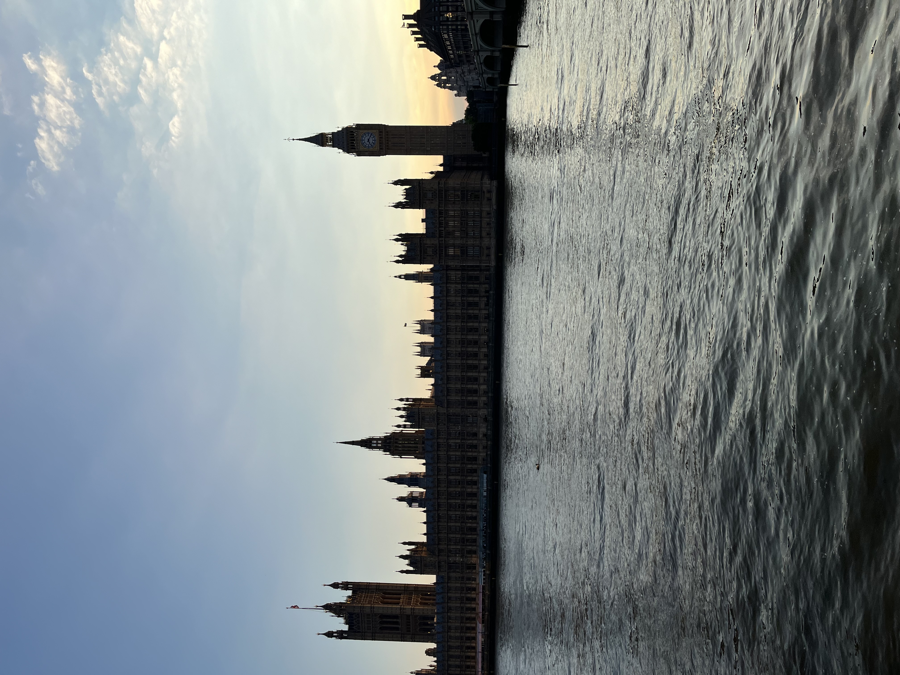

Image Gallery with Alt-Text

Taken on September 1st, 2022 in Jersey City
Taken on August 2nd, 2024 at Lazy Cat Cafe

Taken on June 26th, 2024 in London, United Kingdom
Taken on September 1st, 2022 in Jersey City
Taken on August 2nd, 2024 at Lazy Cat Cafe
Taken on June 26th, 2024 in London, United Kingdom